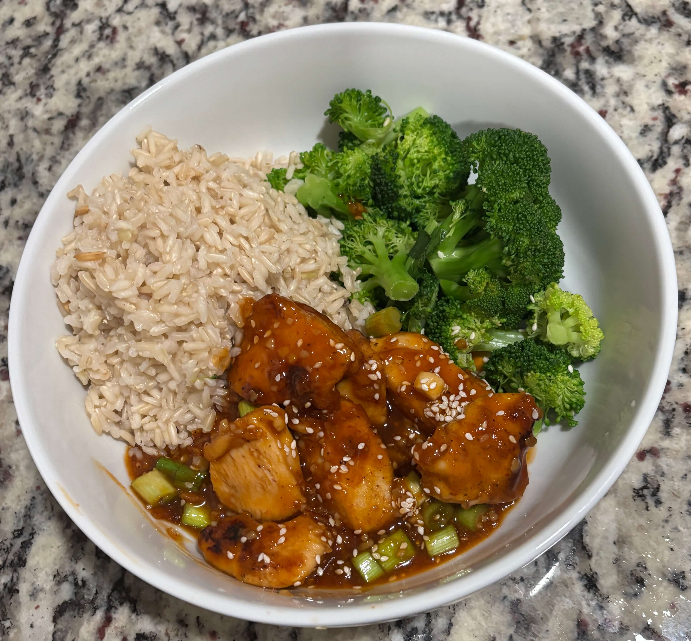

Home
Sesame Chicken

Servings: 4
Prep: 15 min Cook: 15 min
Ingredients
- 5 tbsp canola oil
- 2 eggs lightly beaten
- 3 tbsp cornflour (cornstarch)
- 10 tbsp plain (all-purpose) flour
- ½ tsp salt
- ½ tsp pepper
- ½ tsp garlic salt
- 2 tsp paprika
- 3 chicken breast fillets chopped into bite-size chunks
- boiled rice
- 2 tbsp sesame seeds
- small bunch spring onions/scallions chopped
Sauce
Double these ingredients if you want extra sauce, rather than just coating the chicken.
- 1 tbsp sesame oil optional - you can leave out and just sprinkle with plenty of sesame seeds at the end if you prefer
- 2 cloves garlic peeled and minced
- 1 tbsp Chinese rice vinegar white wine vinegar will work too
- 2 tbsp honey
- 2 tbsp sweet chilli sauce use more or less depending on the brand and how spicy you like it
- 3 tbsp ketchup
- 2 tbsp brown sugar
- 4 tbsp soy sauce
Steps
- Prep your ingredients - place the egg in one shallow bowl and the cornflour in another shallow bowl. Add the flour, salt, pepper, garlic salt and paprika to another shallow bowl and mix together.
- Heat the oil in a wok or large frying pan until hot.
- Dredge the chicken in the cornflour, then dip in the egg (make sure all of the chicken is covered in egg wash), and finally dredge it in the seasoned flour. Add to the wok and cook on a high heat for 6-7 minutes, turning two or three times during cooking, until well browned. You may need to cook in two batches (I find I can do it in one batch so long as it's no more than 3 chicken breasts). Remove from the pan and place in a bowl lined with kitchen towels.
- Add all of the sauce ingredients to the hot wok, stir and bubble on a high heat until the sauce reduces by about a third (should take 2-3 minutes). Add the chicken back in and toss in the sauce to coat. Cook for 1-2 minutes.
- Turn off the heat and divide between four bowls. Serve with boiled rice and top with sesame seeds and spring onions.